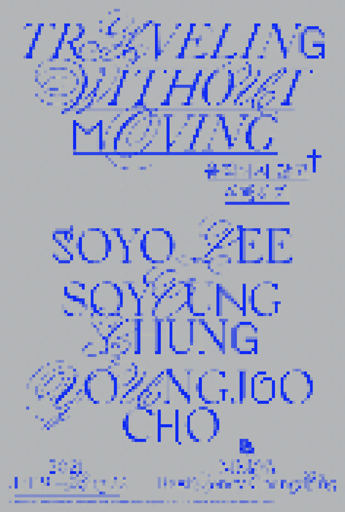

> title
움직이지 않고 여행하기
> content
《움직이지 않고 여행하기》전은 입주작가 정소영의 2013년 작 <움직이지 않고 여행하기>의 제목을 빌려, 물리적 이동이 제한된 감염병 시대라는 맥락 속에서 ‘여행’의 의미를 돌아보고, 대안적
형태의 여행이 있을 수
있는지 살펴보고자 한다. 이분법적 사고와 고정불변함에 대한 믿음을 포기하고 시간과 공간이라는 환상을 극복하면 어떤 종류의 여행이 가능하게 될까. ‘움직이지 않고’ 여행하는
것 또한 가능할
것인가.
다르게 흐르는 자연과 도시의 시간, 그리고 그 시간이 작가 자신의 시간으로 기록되는 지점에 대해 이야기하는 정소영은 이번 전시에서 일제 강점기 고향을 떠나 망명한 소설가
이미륵(1899~1950)에게
접속한다. 자전소설 『압록강은 흐른다』(1946) 속에서 고향에 대한 기억과 그리움으로 정서적 여정을 떠나는 그와 동행하며 작가는 이곳과 저곳의 경계가 흐려짐으로써 탄생하는 새로운
가능성의 세계로 우리를
안내한다.
인간에 의해 도시 환경에 정착하고 길들어졌으나 스스로 자생력을 얻고 풀려난 식물을 다년간 연구하고 있는 이소요는 타의에 의해 터전이 바뀌었음에도 불구하고 나름의 생태를
만들어 가는 생물들의 이야기에
주목함으로써 우리가 처한 감각 환경을 넘어 다양한 시공간을 헤아려볼 것을 제안한다.
돌봄 노동의 현장에서 영감을 받은 조영주의 <휴먼가르텐>은 전시 기간 내내 완결되지 않은 극의 무대이자 관객이 개입할 수 있도록 열린 상태로 전시된다. 텅 비어 보이는
설치물은 비가시적인 가능성의 상태이자
관찰자가 개입 되어야만 의미를 획득하는 확률 파동으로 존재한다. 전시 종료 전에는 퍼포먼스 <인간은 버섯처럼 솟아나지 않는다>의 무대로 기능하며 돌봄 노동 속 관계의 모호함과
신체성을 다층적으로
이야기할 것이다.
